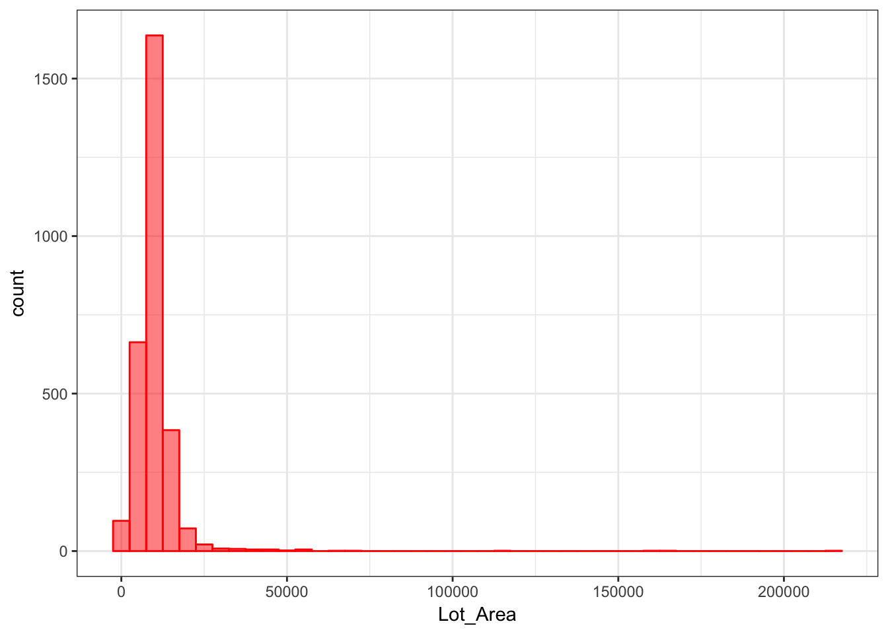
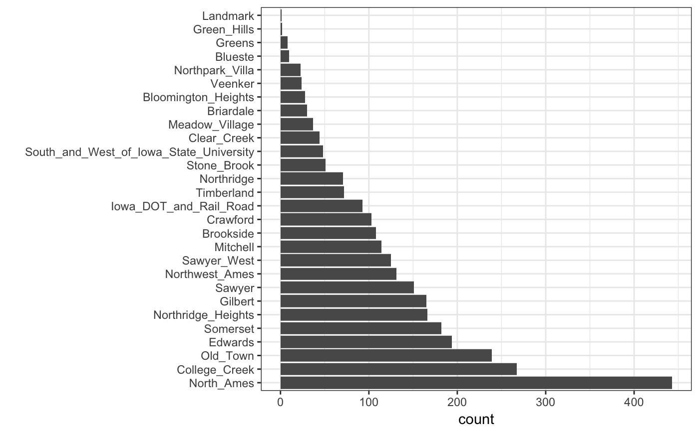

Recipes_and_rsample.RmdThe recipes package contains a data preprocessor that can be used to avoid the potentially expensive formula methods as well as providing a richer set of data manipulation tools than base R can provide. This document uses version 0.1.2.9000 of recipes.
In many cases, the preprocessing steps might contain quantities that require statistical estimation of parameters, such as
signal extraction using principal component analysis
imputation of missing values
transformations of individual variables (e.g. Box-Cox transformations)
It is critical that any complex preprocessing steps be contained inside of resampling so that the model performance estimates take into account the variability of these steps.
Before discussing how rsample can use recipes, let’s look at an example recipe for the Ames housing data.
For illustration, the Ames housing data will be used. There are sale prices of homes along with various other descriptors for the property:
## [1] "MS_SubClass" "MS_Zoning" "Lot_Frontage"
## [4] "Lot_Area" "Street" "Alley"
## [7] "Lot_Shape" "Land_Contour" "Utilities"
## [10] "Lot_Config" "Land_Slope" "Neighborhood"
## [13] "Condition_1" "Condition_2" "Bldg_Type"
## [16] "House_Style" "Overall_Qual" "Overall_Cond"
## [19] "Year_Built" "Year_Remod_Add" "Roof_Style"
## [22] "Roof_Matl" "Exterior_1st" "Exterior_2nd"
## [25] "Mas_Vnr_Type" "Mas_Vnr_Area" "Exter_Qual"
## [28] "Exter_Cond" "Foundation" "Bsmt_Qual"
## [31] "Bsmt_Cond" "Bsmt_Exposure" "BsmtFin_Type_1"
## [34] "BsmtFin_SF_1" "BsmtFin_Type_2" "BsmtFin_SF_2"
## [37] "Bsmt_Unf_SF" "Total_Bsmt_SF" "Heating"
## [40] "Heating_QC" "Central_Air" "Electrical"
## [43] "First_Flr_SF" "Second_Flr_SF" "Low_Qual_Fin_SF"
## [46] "Gr_Liv_Area" "Bsmt_Full_Bath" "Bsmt_Half_Bath"
## [49] "Full_Bath" "Half_Bath" "Bedroom_AbvGr"
## [52] "Kitchen_AbvGr" "Kitchen_Qual" "TotRms_AbvGrd"
## [55] "Functional" "Fireplaces" "Fireplace_Qu"
## [58] "Garage_Type" "Garage_Finish" "Garage_Cars"
## [61] "Garage_Area" "Garage_Qual" "Garage_Cond"
## [64] "Paved_Drive" "Wood_Deck_SF" "Open_Porch_SF"
## [67] "Enclosed_Porch" "Three_season_porch" "Screen_Porch"
## [70] "Pool_Area" "Pool_QC" "Fence"
## [73] "Misc_Feature" "Misc_Val" "Mo_Sold"
## [76] "Year_Sold" "Sale_Type" "Sale_Condition"
## [79] "Sale_Price" "Longitude" "Latitude"Suppose that we will again fit a simple regression model with the formula:
The distribution of the lot size is right-skewed:
library(ggplot2)
theme_set(theme_bw())
ggplot(ames, aes(x = Lot_Area)) +
geom_histogram(binwidth = 5000, col = "red", fill ="red", alpha = .5)
It might benefit the model if we estimate a transformation of the data using the Box-Cox procedure.
Also, note that the frequencies of the neighborhoods can vary:

When these are resampled, some neighborhoods will not be included in the test set and this will result in a column of dummy variables with zero entires. The same is true for the House_Style variable. We might want to collapse rarely occurring values into “other” categories.
To define the design matrix, an initial recipe is created:
library(recipes)
rec <- recipe(Sale_Price ~ Neighborhood + House_Style + Year_Sold + Lot_Area,
data = ames) %>%
# Log the outcome
step_log(Sale_Price, base = 10) %>%
# Collapse rarely occurring jobs into "other"
step_other(Neighborhood, House_Style, threshold = 0.05) %>%
# Dummy variables on the qualitative predictors
step_dummy(all_nominal()) %>%
# Unskew a predictor
step_BoxCox(Lot_Area) %>%
# Normalize
step_center(all_predictors()) %>%
step_scale(all_predictors())
rec## Data Recipe
##
## Inputs:
##
## role #variables
## outcome 1
## predictor 4
##
## Operations:
##
## Log transformation on Sale_Price
## Collapsing factor levels for Neighborhood, House_Style
## Dummy variables from all_nominal()
## Box-Cox transformation on Lot_Area
## Centering for all_predictors()
## Scaling for all_predictors()This recreates the work that the formula method traditionally uses with the additional steps.
While the original data object ames is used in the call, it is only used to define the variables and their characteristics so a single recipe is valid across all resampled versions of the data. The recipe can be estimated on the analysis component of the resample.
If we execute the recipe on the entire data set:
## oper 1 step log [training]
## oper 2 step other [training]
## oper 3 step dummy [training]
## oper 4 step BoxCox [training]
## oper 5 step center [training]
## oper 6 step scale [training]## Data Recipe
##
## Inputs:
##
## role #variables
## outcome 1
## predictor 4
##
## Training data contained 2930 data points and no missing data.
##
## Operations:
##
## Log transformation on Sale_Price [trained]
## Collapsing factor levels for Neighborhood, House_Style [trained]
## Dummy variables from Neighborhood, House_Style [trained]
## Box-Cox transformation on Lot_Area [trained]
## Centering for Year_Sold, ... [trained]
## Scaling for Year_Sold, ... [trained]To get the values of the data, the bake function can be used:
# By default, the selector `everything()` is used to
# return all the variables. Other selectors can be used too.
bake(rec_training_set, newdata = head(ames))## # A tibble: 6 x 14
## Lot_Area Year_Sold Sale_Price Neighborhood_College_… Neighborhood_Old_T…
## <dbl> <dbl> <dbl> <dbl> <dbl>
## 1 2.70 1.68 5.33 -0.317 -0.298
## 2 0.506 1.68 5.02 -0.317 -0.298
## 3 0.930 1.68 5.24 -0.317 -0.298
## 4 0.423 1.68 5.39 -0.317 -0.298
## 5 0.865 1.68 5.28 -0.317 -0.298
## 6 0.197 1.68 5.29 -0.317 -0.298
## # ... with 9 more variables: Neighborhood_Edwards <dbl>,
## # Neighborhood_Somerset <dbl>, Neighborhood_Northridge_Heights <dbl>,
## # Neighborhood_Gilbert <dbl>, Neighborhood_Sawyer <dbl>,
## # Neighborhood_other <dbl>, House_Style_One_Story <dbl>,
## # House_Style_Two_Story <dbl>, House_Style_other <dbl>Note that there are fewer dummy variables for Neighborhood and House_Style than in the data.
Also, retain keeps the processed version of the data set so that we don’t have to reapply the steps to extract the processed values. For the data used to train the recipe, we would have used:
## # A tibble: 6 x 14
## Year_Sold Lot_Area Sale_Price Neighborhood_College_… Neighborhood_Old_T…
## <dbl> <dbl> <dbl> <dbl> <dbl>
## 1 1.68 2.70 5.33 -0.317 -0.298
## 2 1.68 0.506 5.02 -0.317 -0.298
## 3 1.68 0.930 5.24 -0.317 -0.298
## 4 1.68 0.423 5.39 -0.317 -0.298
## 5 1.68 0.865 5.28 -0.317 -0.298
## 6 1.68 0.197 5.29 -0.317 -0.298
## # ... with 9 more variables: Neighborhood_Edwards <dbl>,
## # Neighborhood_Somerset <dbl>, Neighborhood_Northridge_Heights <dbl>,
## # Neighborhood_Gilbert <dbl>, Neighborhood_Sawyer <dbl>,
## # Neighborhood_other <dbl>, House_Style_One_Story <dbl>,
## # House_Style_Two_Story <dbl>, House_Style_other <dbl>The next section will explore recipes and bootstrap resampling for modeling:
## # Bootstrap sampling
## # A tibble: 25 x 2
## splits id
## <list> <chr>
## 1 <S3: rsplit> Bootstrap01
## 2 <S3: rsplit> Bootstrap02
## 3 <S3: rsplit> Bootstrap03
## 4 <S3: rsplit> Bootstrap04
## 5 <S3: rsplit> Bootstrap05
## 6 <S3: rsplit> Bootstrap06
## 7 <S3: rsplit> Bootstrap07
## 8 <S3: rsplit> Bootstrap08
## 9 <S3: rsplit> Bootstrap09
## 10 <S3: rsplit> Bootstrap10
## # ... with 15 more rows## <2930/1076/2930>We can add a recipe column to the tibble. rsample has a connivence function called prepper that can be used to call prep but has the split object as the first argument (for easier purrring):
library(purrr)
bt_samples$recipes <- map(bt_samples$splits, prepper, recipe = rec, retain = TRUE, verbose = FALSE)
bt_samples## # Bootstrap sampling
## # A tibble: 25 x 3
## splits id recipes
## <list> <chr> <list>
## 1 <S3: rsplit> Bootstrap01 <S3: recipe>
## 2 <S3: rsplit> Bootstrap02 <S3: recipe>
## 3 <S3: rsplit> Bootstrap03 <S3: recipe>
## 4 <S3: rsplit> Bootstrap04 <S3: recipe>
## 5 <S3: rsplit> Bootstrap05 <S3: recipe>
## 6 <S3: rsplit> Bootstrap06 <S3: recipe>
## 7 <S3: rsplit> Bootstrap07 <S3: recipe>
## 8 <S3: rsplit> Bootstrap08 <S3: recipe>
## 9 <S3: rsplit> Bootstrap09 <S3: recipe>
## 10 <S3: rsplit> Bootstrap10 <S3: recipe>
## # ... with 15 more rows## Data Recipe
##
## Inputs:
##
## role #variables
## outcome 1
## predictor 4
##
## Training data contained 2930 data points and no missing data.
##
## Operations:
##
## Log transformation on Sale_Price [trained]
## Collapsing factor levels for Neighborhood, House_Style [trained]
## Dummy variables from Neighborhood, House_Style [trained]
## Box-Cox transformation on Lot_Area [trained]
## Centering for Year_Sold, ... [trained]
## Scaling for Year_Sold, ... [trained]Now, to fit the model, the fit function only needs the recipe as input. This is because the above code used retain = TRUE. Otherwise, the split objects would also be needed to bake the recipe (as it will in the prediction function below).
fit_lm <- function(rec_obj, ...)
lm(..., data = juice(rec_obj, everything()))
bt_samples$lm_mod <-
map(
bt_samples$recipes,
fit_lm,
Sale_Price ~ .
)
bt_samples## # Bootstrap sampling
## # A tibble: 25 x 4
## splits id recipes lm_mod
## <list> <chr> <list> <list>
## 1 <S3: rsplit> Bootstrap01 <S3: recipe> <S3: lm>
## 2 <S3: rsplit> Bootstrap02 <S3: recipe> <S3: lm>
## 3 <S3: rsplit> Bootstrap03 <S3: recipe> <S3: lm>
## 4 <S3: rsplit> Bootstrap04 <S3: recipe> <S3: lm>
## 5 <S3: rsplit> Bootstrap05 <S3: recipe> <S3: lm>
## 6 <S3: rsplit> Bootstrap06 <S3: recipe> <S3: lm>
## 7 <S3: rsplit> Bootstrap07 <S3: recipe> <S3: lm>
## 8 <S3: rsplit> Bootstrap08 <S3: recipe> <S3: lm>
## 9 <S3: rsplit> Bootstrap09 <S3: recipe> <S3: lm>
## 10 <S3: rsplit> Bootstrap10 <S3: recipe> <S3: lm>
## # ... with 15 more rowsTo get predictions, the function needs three arguments: the splits (to get the assessment data), the recipe (to process them), and the model. To iterate over these, the function purrr::pmap is used:
pred_lm <- function(split_obj, rec_obj, model_obj, ...) {
mod_data <- bake(
rec_obj,
newdata = assessment(split_obj),
all_predictors(),
all_outcomes()
)
out <- mod_data %>% select(Sale_Price)
out$predicted <- predict(model_obj, newdata = mod_data %>% select(-Sale_Price))
out
}
bt_samples$pred <-
pmap(
lst(
split_obj = bt_samples$splits,
rec_obj = bt_samples$recipes,
model_obj = bt_samples$lm_mod
),
pred_lm
)
bt_samples## # Bootstrap sampling
## # A tibble: 25 x 5
## splits id recipes lm_mod pred
## <list> <chr> <list> <list> <list>
## 1 <S3: rsplit> Bootstrap01 <S3: recipe> <S3: lm> <tibble [1,076 × 2]>
## 2 <S3: rsplit> Bootstrap02 <S3: recipe> <S3: lm> <tibble [1,105 × 2]>
## 3 <S3: rsplit> Bootstrap03 <S3: recipe> <S3: lm> <tibble [1,102 × 2]>
## 4 <S3: rsplit> Bootstrap04 <S3: recipe> <S3: lm> <tibble [1,015 × 2]>
## 5 <S3: rsplit> Bootstrap05 <S3: recipe> <S3: lm> <tibble [1,070 × 2]>
## 6 <S3: rsplit> Bootstrap06 <S3: recipe> <S3: lm> <tibble [1,058 × 2]>
## 7 <S3: rsplit> Bootstrap07 <S3: recipe> <S3: lm> <tibble [1,081 × 2]>
## 8 <S3: rsplit> Bootstrap08 <S3: recipe> <S3: lm> <tibble [1,048 × 2]>
## 9 <S3: rsplit> Bootstrap09 <S3: recipe> <S3: lm> <tibble [1,090 × 2]>
## 10 <S3: rsplit> Bootstrap10 <S3: recipe> <S3: lm> <tibble [1,072 × 2]>
## # ... with 15 more rowsCalculating the RMSE:
rmse <- function(dat)
sqrt(mean((dat$Sale_Price - dat$predicted)^2))
bt_samples$RMSE <- map_dbl(bt_samples$pred, rmse)
summary(bt_samples$RMSE)## Min. 1st Qu. Median Mean 3rd Qu. Max.
## 0.122 0.126 0.130 0.130 0.133 0.140